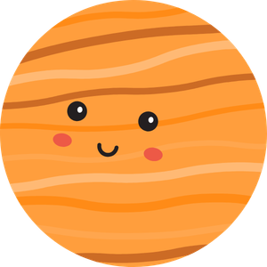
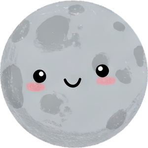
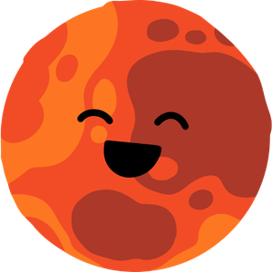
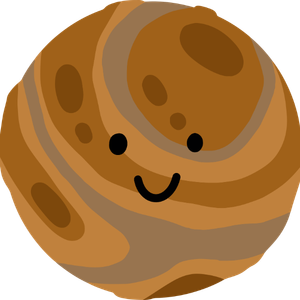
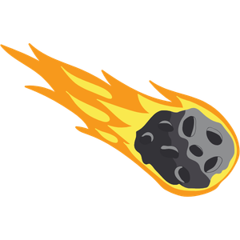
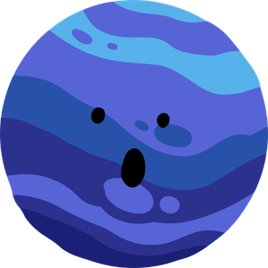
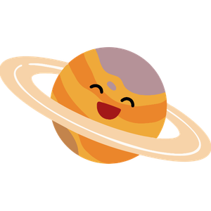
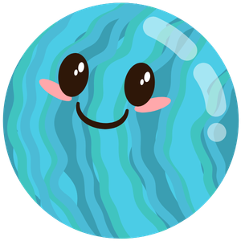
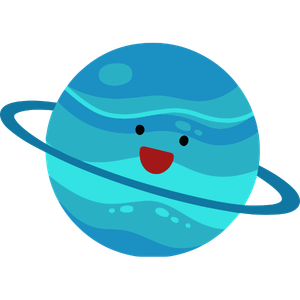
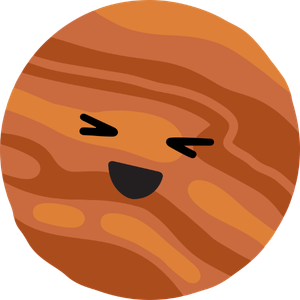

Espaço com rosto chibi · 13 artes
Categoria oficial completa, incluindo o novo Sol, os planetas, Lua, estrela e meteoro. As duas versões de Urano foram preservadas.
Estrela
Original Chibi com rosto
Chibi com rosto Júpiter

Original Chibi com rosto
Chibi com rostoLua

Original Chibi com rosto
Chibi com rostoMarte

Original Chibi com rosto
Chibi com rostoMercúrio

Original Chibi com rosto
Chibi com rostoMeteoro

Original Chibi com rosto
Chibi com rostoNetuno

Original Chibi com rosto
Chibi com rostoSaturno

Original Chibi com rosto
Chibi com rostoSol
Nova arte
criada do zero
Original Chibi com rosto
Chibi com rostoTerra
Original Chibi com rosto
Chibi com rosto Urano

Original Chibi com rosto
Chibi com rostoUrano · com anel

Original Chibi com rosto
Chibi com rostoVênus

Original Chibi com rosto
Chibi com rosto